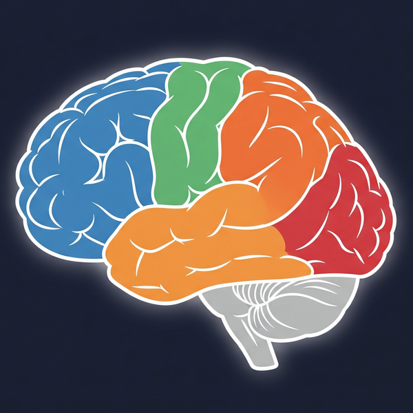
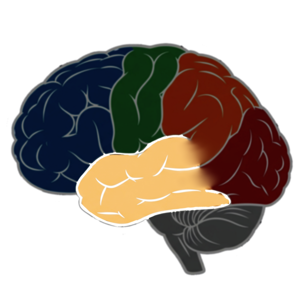
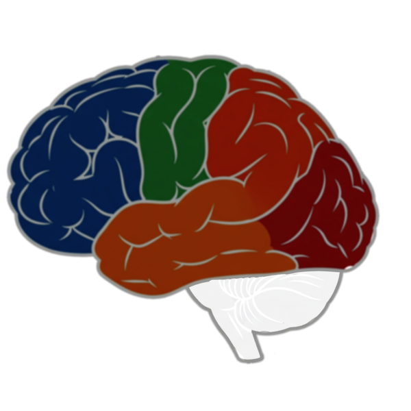
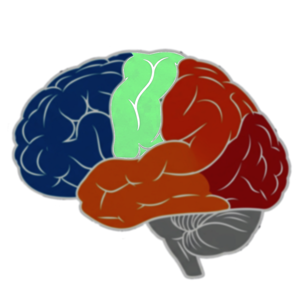
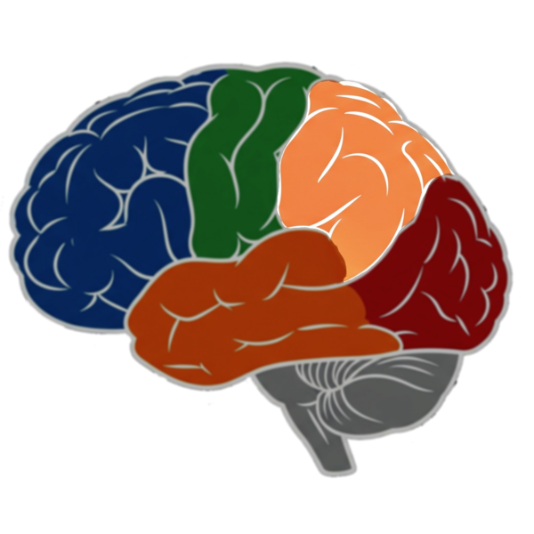
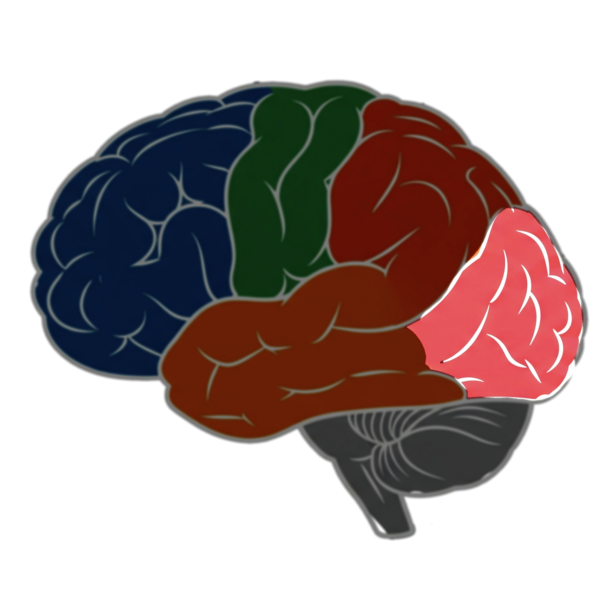
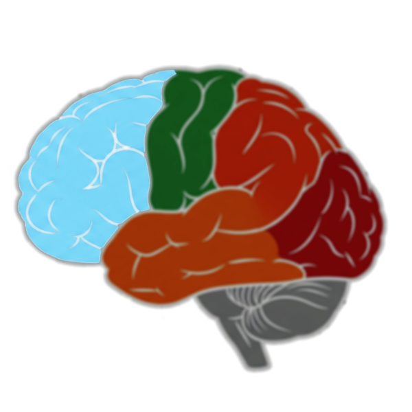

Click on brain regions to explore AI components. Press ESC to close panels.







A Journey Into the Mind
Throughout history, humanity's greatest innovations have emerged by studying nature's masterpieces. We learned flight from birds, navigation from stars, and efficiency from leaves. Each breakthrough came when we dared to ask: "How does nature solve this?"
Now, as we stand at the dawn of the age of artificial intelligence, we face our most ambitious challenge yet. What better blueprint could there be than the human brain—the most sophisticated, mysterious, and powerful creation known to existence?
This system is not merely code and algorithms. It is an architecture inspired by billions of years of evolution, where every component mirrors the elegant complexity of your own mind. You are about to embark on a journey through an AI that thinks, learns, and grows—just as you do.
Welcome to the future, designed by nature's wisdom.